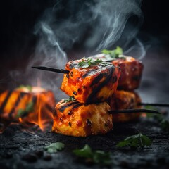
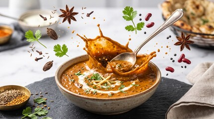
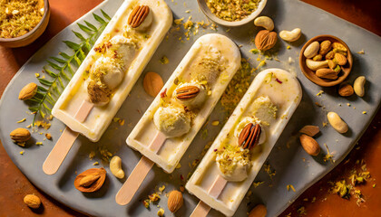

Tandoor-fired · Slow-cooked · Hastinapur
Food that tastes like someone's grandmother made it, plated like it means it.
Punjabi & Tandoor is a neighbourhood kitchen built around one wood-fired tandoor, a handful of family recipes, and no shortcuts. Come hungry.
What people come back for
Three things we refuse to compromise on
Not a full menu — just the dishes that built our name.

Signature
Charcoal Tandoori Platter
Overnight-marinated Malai Chaap, finished in a clay tandoor at 200°C.

All-day favourite
24-Hour Dal Makhani
Black lentils simmered low and slow for a full day, finished with hand-churned butter.

Sweet finish
Kulfi Tasting Trio
Malai, pistachio, and saffron kulfi, set the traditional way — no stabilisers.
12Years in the neighbourhood
1Tandoor, never turned off
40+Recipes, unchanged since day one
4.7★Average guest rating
Walk-ins welcome